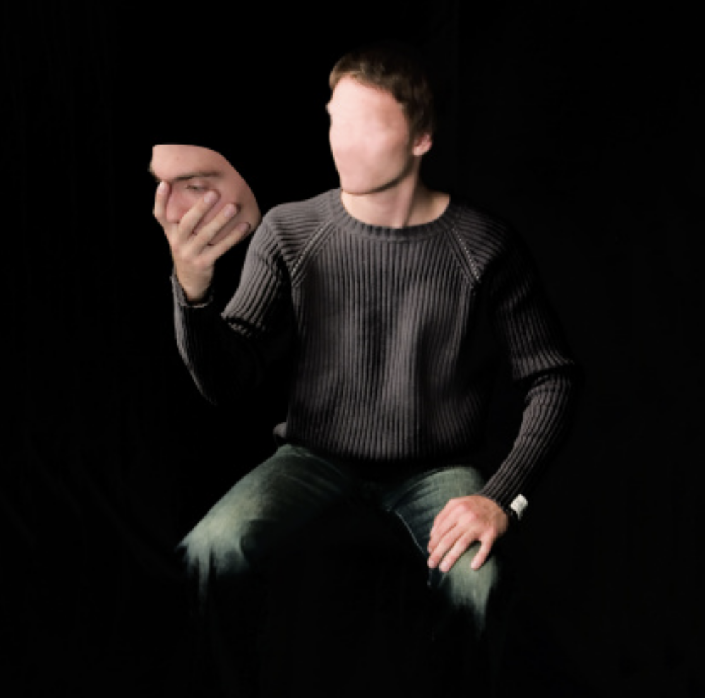

What are Dissociative Disorders and how do they effect you?

First: what are they?
Dissociative Disorders are mental health conditions involving involuntary, chronic escapes from reality characterized by disruptions in memory, consciousness, identity, or perception.
When someone experiences these disorders, they may feel disconnected from themselves, their thoughts, or the world around them, or they may experience gaps in their memory.
What causes Dissociative Disorders?
Dissociation is a natural, protective process. When faced with an experience that the brain perceives as impossible to endure or escape (such as abuse, war, or natural disasters), it can "check out" or detach from reality. This allows the individual to mentally survive the event by distancing themselves from the pain, fear, or horror.
A dissociative disorder occurs when this survival strategy becomes a rigid, automatic, and long-term habit that persists long after the initial danger has passed, eventually interfering with daily life.
How can I treat my Dissociative Disorders?
Treating dissociative disorders focuses on helping patients process trauma, manage emotions, and reintegrate fragmented identities through psychotherapy. Primary treatments include trauma-focused therapy, cognitive behavioral therapy (CBT), dialectical behavioral therapy (DBT), and Eye Movement Desensitization and Reprocessing (EMDR). Medications like antidepressants may treat co-occurring anxiety or depression, but psychotherapy is the main treatment approach.
Cleveland Clinic